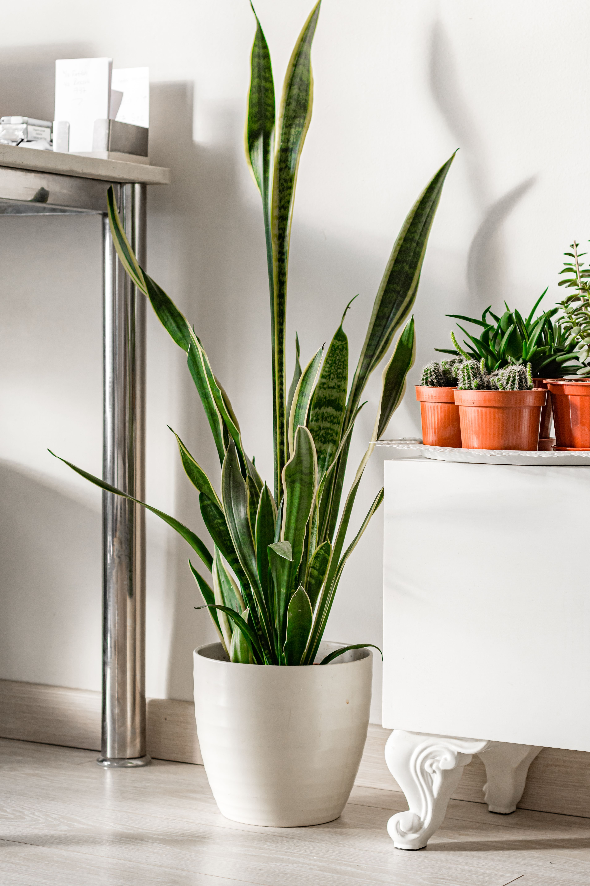

Snake Plant

Snake Plant is an easy-care houseplant with tall green leaves. It can tolerate low light and does not need frequent watering.
Plant information
Scientific name: Dracaena trifasciata
Difficulty: Easy
Light: Low to bright indirect light
Watering: Every 2–3 weeks
Humidity: 30–50%
Temperature: 15–30°C
Toxicity: Toxic to pets
Care instructions
Light
Place the Snake Plant in low to bright indirect light. Avoid strong direct sunlight for long periods.
Water
Water the plant when the soil is completely dry. Avoid overwatering because it can cause root problems.
Humidity
Snake Plant does not require high humidity and can grow well in normal indoor conditions.
Temperature
Keep the plant in a warm room and protect it from very cold temperatures and drafts.
Care tips
- Allow the soil to dry completely between watering.
- Give the plant indirect light.
- Do not leave water in the pot or saucer.
- Clean the leaves regularly.
Community Q&A
Have a question about Snake Plant?
← Back to the garden